0x00 前言
相信很多人在运行游戏时，都接触到类似这样的一个界面：
这种界面叫 launcher，翻译过来就是「登陆器」。
登陆器一般集成了自动更新游戏版本、新用户注册、最新动态、充值入口等多种功能，还能在里面注入广告增加隐形收益。
但是在 RO 中，这种登陆器要怎么做呢 ？
launcher.exe的译名很多，为了不混淆，本文统一叫「登陆器」；而Ragnarok.exe这种直接启动游戏的，本文统一叫「启动器」
0x10 Thor Patcher 简介
其实这种登陆器核心的作用是自动升级，实现原理很简单，会编程的同学可以自己实现，例如我在 2018 年就写过一款通用的 Auto-Upgrader ，可以参考一下代码的实现思路。
至于没有编程基础的同学，可以用一些公开登陆器，只需修改配置即可。例如 Thor Patcher 是 rAthena 曾经推荐用的一款免费登陆器（不开源），最后更新的版本是在 2018 年发布的 2.6.4.8B 版本。
0x20 RO Patch 的发布步骤
在讲解 Thor Patcher 之前，首先需要清楚 RO 客户端的 Patch 是如何发布的：
- 生成 RO 启动器
Ragnarok.exe： - 修改 system 目录下的文件
- 把 data.grf 的部分图档资源解包到 data 目录中，进行新增/修改/删除操作
- 对部分不想公开的图档资源，加密压缩成单独的 GRF
new_feature.grf - 重新生成解密 GRF 的启动器和 dll 文件
- 修改 data.ini 中 GRF 的加载顺序
- 把上述所有修改涉及的文件，压缩成
ro-patch-yyyyMMdd.zip发布给玩家覆盖
而在引入 Thor Patcher 之后，第 1-6 步都是一样要做的，从第 7 步后开始有变化。
我这里根据 1-6 步的操作、准备了一份实际的补丁备用，作为下面讲解的案例：
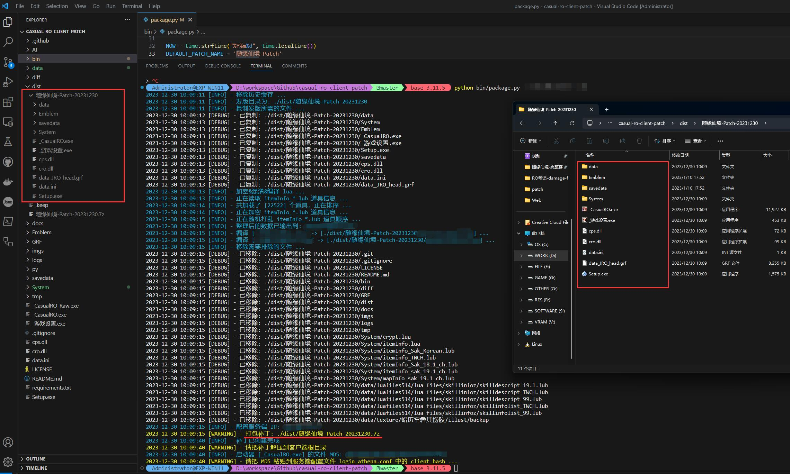
该补丁名为 随缘仙境-Patch-20231230，其目录结构如下：
Mode Length Name
---- ------ ----
d----- data
d----- Emblem
d----- savedata
d----- System
-a---- 73728 cps.dll
-a---- 100864 cro.dll
-a---- 97 data.ini
-a---- 8452725 data_JRO_head.grf
-a---- 1612800 Setup.exe
-a---- 12213248 _CasualRO.exe
-a---- 463816 _游戏设置.exe其中
_CasualRO.exe就是 RO 启动器，我把Ragnarok.exe的名字改了
0x30 Thor Patcher 部署
Thor Patcher 登陆器部署涉及到服务端和客户端两部分，均只需要部署一次即可
0x31 结构说明
Thor Patcher 登陆器每个版本的结构都不太一样，这里以最后一个版本 2.6.4.8B 进行说明。
下载解压后可以看到 5 个目录，其作用分别如下：
- Additional Skins: 登陆器皮肤，先不用管（赠送的皮肤也不好看）
- Configuration: 登陆器配置，复制到客户端使用
- Patcher: 登陆器本体
- Tools: 用于生成
*.thor格式补丁的工具 - Web: 登陆器配套的 html web 服务页面，复制到服务端使用
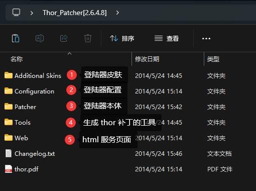
0x32 Web 服务部署
首先你需要搭建一个简单的 web 服务器，可以选择 nginx、 httpd 或 tomcat 等框架搭建都可以。
因为搭建 web 服务器比较简单，网上一搜一大把教程，我这里就不展开了，最低要求是你只需要任意框架搭建出一个 Hello World 页面即可（部分登陆器皮肤是 php 写的，如果你想一劳永逸，建议搭建服务器的时候顺便安装 php 插件，纯 html 支持的皮肤有限）。
想白嫖的话可以使用 github 或 gitlab 的 Pages 服务，前提是你的补丁大小要拆分成小于 100M 的大小，否则无法上传
因为我手上刚好有一个 RO 的 php 服务（是 docker httpd），于是就直接拿来用了：
这个服务在本地的主页地址是 http://127.0.0.1:8096/ro，其中：
/ro是 web 服务的根目录- 映射到后端的文件目录为
/var/www/html/ro
Thor Patcher 默认提供的 Web 目录结构如下：
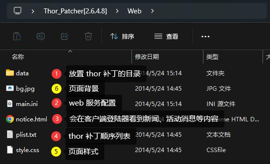
这里把 Web 目录重命名为 patch，然后把整个 patch 目录复制到 /var/www/html/ro/patch ：
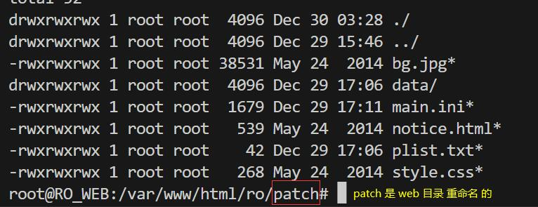
此时 http://127.0.0.1:8096/ro/patch 就是 Thor Patcher 服务页面的根目录，访问能看到这样的内容即可：
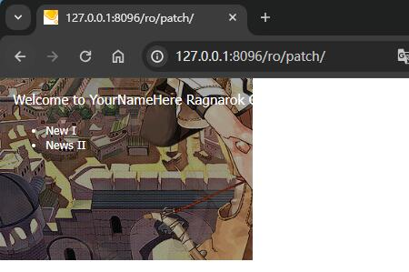
这是渲染 notice.html 的页面，因为现在还没有设置任何东西，所以看到的是默认的内容
最后编辑 main.ini 文件（其后端文件位置为 /var/www/html/ro/patch/main.ini），修改 file_url 为 http://127.0.0.1:8096/ro/patch/data/、保存即可：
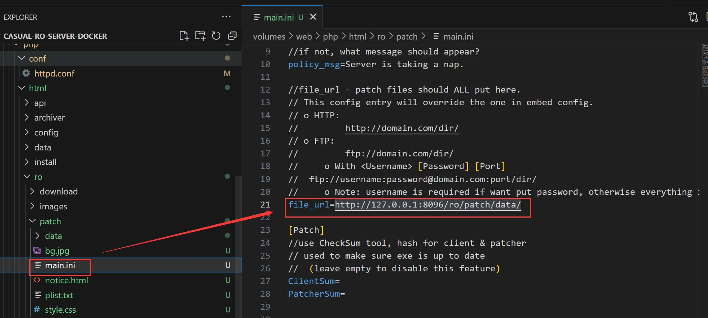
其实 http://127.0.0.1:8096/ro/patch/data/ 就是未来所有补丁的发布目录，对应后端文件目录为 /var/www/html/ro/patch/data。
这里为了安全起见，我把 web 服务的目录浏览权限关了，所以访问页面返回的是 Forbidden：
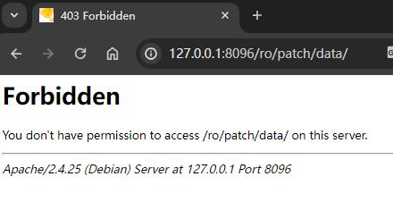
Thor Patcher 登陆器未来可以从
http://127.0.0.1:8096/ro/patch/plist.txt拿到补丁名称，所以不影响补丁下载
至此，服务端侧的 web 服务配置可以先告一段落，下面先配置客户端侧的登陆器（后面还需要回来 web 服务做其他配置）。
0x33 登陆器部署
Thor Patcher 提供的 Patcher 目录下只有一个文件 Thor.exe：
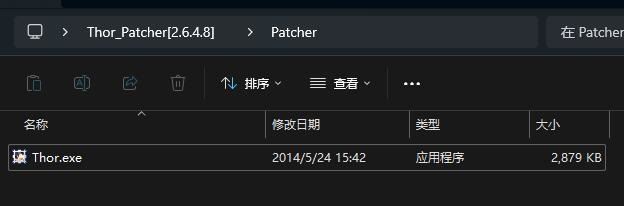
该登陆器无法独立运行，需要将其复制到 Thor Patcher 的 Configuration 目录下：
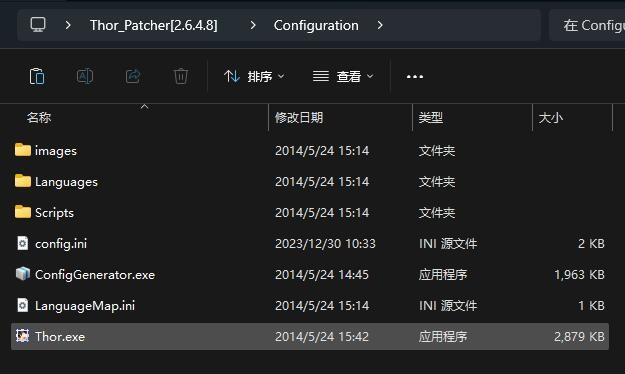
为了方便找到登陆器，建议将其重命名为 _开始游戏.exe：
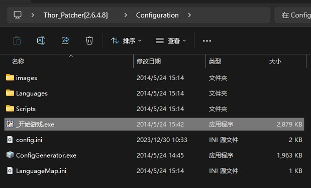
然后编辑 config.ini 文件：
- 修改
[Config:Main]配置段：RootURL='http://127.0.0.1:8096/ro/patch/'，即前面配置的 web 服务目录RemoteConfigFile='main.ini'，指向 web 服务的配置文件，保持名称一致即可，非必要不要改StatusFile='upgrade.dat'，随便命名即可，每次运行登录器时在本地生成的一份升级记录文件，避免重复升级DefaultGRF='data.grf'，thor 补丁如果选择了「合并 GRF」模式、默认合并到的 GRF 文件名称（后续讲补丁生成的时候会提到）ClientEXE='_CasualRO.exe'，RO 启动器名称，根据实际情况修改，一般官服默认是 Ragnarok.exe
- 修改
[NoticeBox:Box0]配置段：URL='http://127.0.0.1:8096/ro/patch/notice.html'，即前面配置的 web 服务中 notice.html 的地址，主要为了当服务端发布新闻或活动通知时，登陆器可以马上得到消息
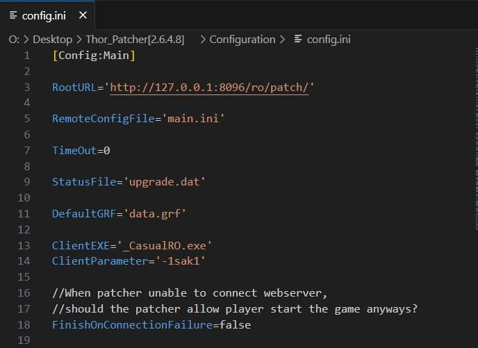
其他配置暂时不需要改，但是因为 config.ini 里面还含有皮肤相关的配置，后续如果修改登陆器皮肤后、config.ini 文件被覆盖了，上述的配置需要迁移到新的配置文件中。
配置完成后，可以直接运行登陆器，如果配置正确，你会看到：
START GAME处于激活状态- 新闻页可以正常加载
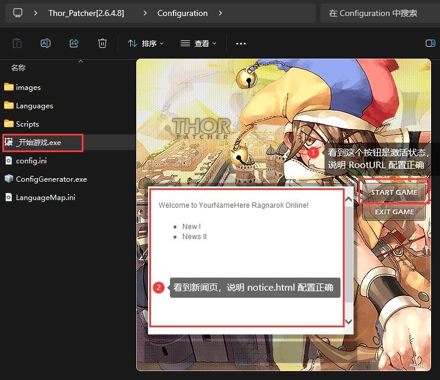
反之如果配置失败，你会看到：
START GAME处于禁用状态- 新闻页无法显示
- 下方下载补丁进度条显示 “和服务器通讯失败”
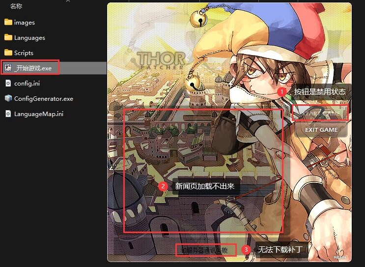
在 Thor Patcher 的 Configuration 目录下，除了 config.ini 和 _开始游戏.exe 之外的其他文件/文件夹，其实都是和登陆器皮肤相关的文件，这里先记住就好，暂时不需要动。
现在可以全选 Configuration 目录下所有的文件/文件夹，全部复制到 RO 客户端的根目录。
注意不需要复制
Configuration目录本身
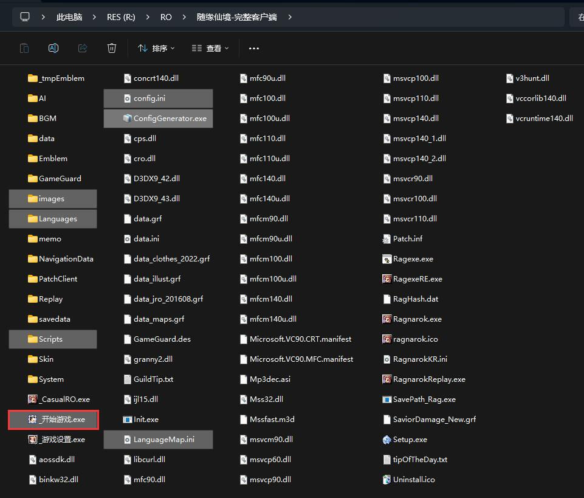
0x40 生成 thor 格式补丁
还记得我前面生成以备用的 随缘仙境-Patch-20231230 补丁吧？
因为登陆器只能下载 *.thor 格式的补丁，其他格式会报错，所以把前面生成的补丁二次打包为 *.thor 格式的补丁，有两种生成方法：
0x41 使用 ThorGenerator 生成（不推荐）
在 Thor Patcher 的 Tools 目录下，提供了 ThorGenerator.exe 工具用于生成 thor 格式补丁，使用方法很简单：
在 Output 设置期望生成的补丁位置和名称：
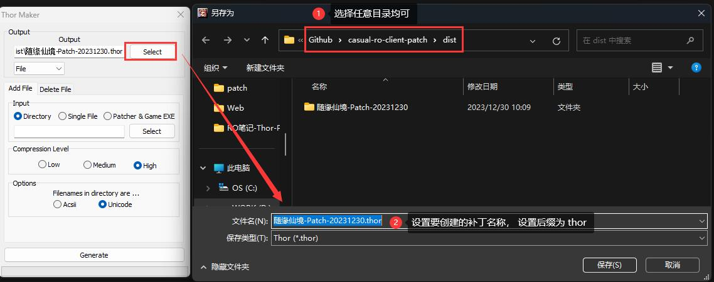
在 Add File -> Input 选择补丁中的目录/文件：
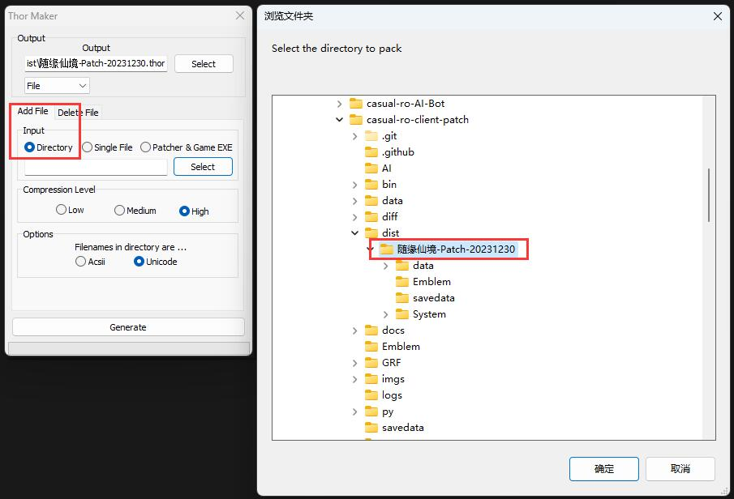
这里注意的是，像这个例子中，补丁内含有多个子目录和文件，如果直接选择 随缘仙境-Patch-20231230 目录生成补丁是不对的，因为登陆器在释放补丁时，会以保留 随缘仙境-Patch-20231230 这个目录的方式、释放到 RO 客户端的根目录，这样安装补丁是错误的，因为补丁文件在独立的文件夹中、没有覆盖对应的文件。
为了确保安装正确，必须逐个选中 随缘仙境-Patch-20231230 下的每个目录和文件，使用 Directory 或 Single File 的方式逐个生成 thor 补丁，在这里例子中要有 11 个目录和文件、就要重复生成 11 次补丁，这是非常繁琐的。
所以官方 wiki 也宣布了 ThorGenerator 是严重过时的工具，推荐使用 GRF-Editor 生成 thor 补丁。
0x42 使用 GRF-Editor 生成
不了解 GRF-Editor 的同学可以先移步到我这篇文章学习一下《「RO 笔记」GRF 加密指引》。
使用 GRF-Editor 生成 thor 补丁就非常快捷了。
文件 -> 新建 -> 新建 Thor ：
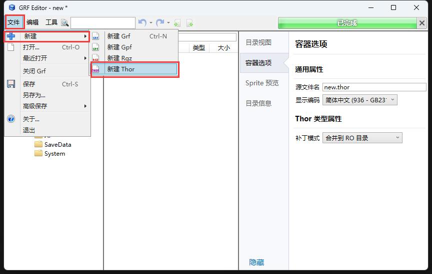
新建的 Thor 自带了一些默认的目录，把 root 下的全部目录和文件先删除：
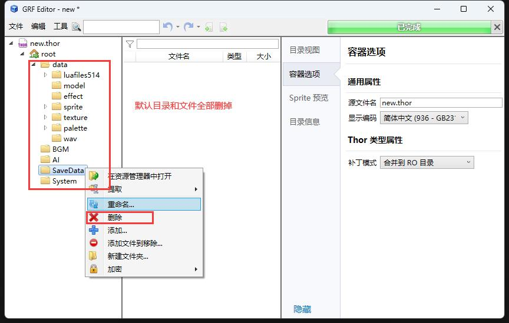
随即把 随缘仙境-Patch-20231230 补丁目录下的所有目录和文件一次性拖拽进 root 目录下：
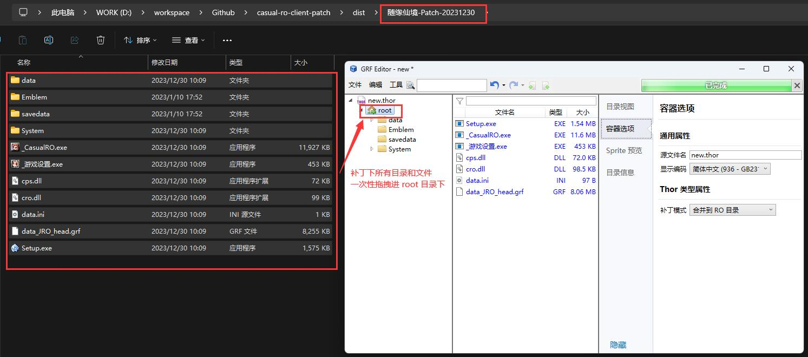
然后点击右侧的「容器选项」菜单，在「补丁模式」下选择安装方案：
- 合并到 RO 目录： 即直接释放在 RO 客户端的根目录并覆盖对应文件
- 合并进 GRF： 仅用于补丁内容只涉及 data 目录的情况，安装补丁时把图档合并到指定的 GRF 内；如果没有指定 GRF，就会取登陆器
config.ini配置文件中DefaultGRF的配置值
选择哪个方案看个人需求，这里选择「合并到 RO 目录」。
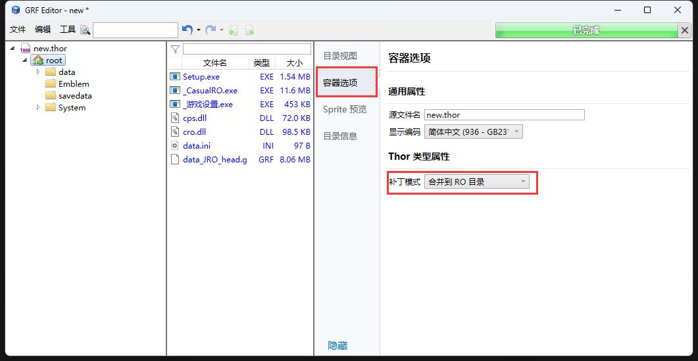
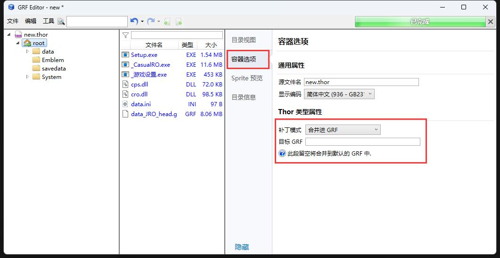
最后 文件 -> 另存为，保存为 CRO-Patch-20231230.thor 补丁即可。
这里保存 thor 补丁的时候，我没有使用中文，避免服务端和客户端编码不一致时引起不必要的麻烦
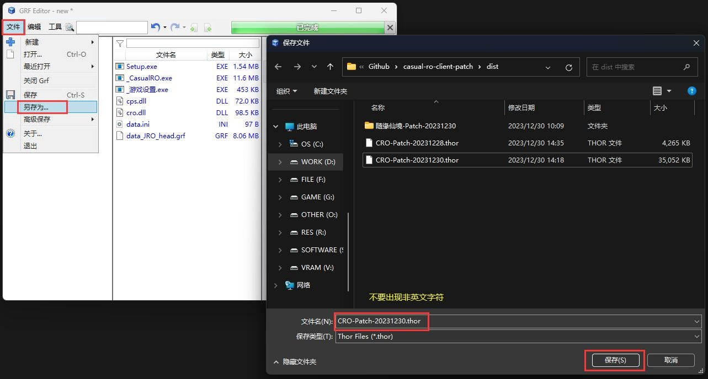
0x50 发布补丁
把生成的补丁上传到 web 服务后端的 /var/www/html/ro/patch/data 目录：
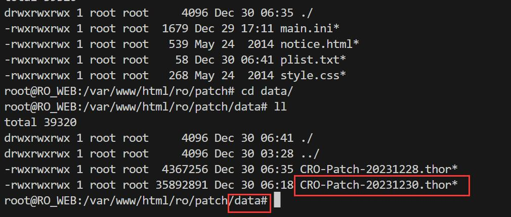
修改 web 服务的 plist.txt 文件内容：
- 文件路径在：
/var/www/html/ro/patch/plist.txt - 文件格式为：
// 序号 补丁名称
0001 CRO-Patch-20231228.thor
0002 CRO-Patch-20231230.thor注意几点：
//是行注释，该行不会读取- 序号可以随意，
1,2,3,...亦可，01,02,03,...亦可 - 序号和补丁名称之间必须有一个空格，换言之补丁名称不允许出现空格
- plist.txt 里面写的补丁必须存在于
/var/www/html/ro/patch/data目录，否则登陆器在下载到这个不存在的补丁时、会报错并终止后续所有补丁的下载 - 当有多个补丁时，登陆器会按顺序下载并安装补丁，已安装的补丁会记录在客户端本地的
upgrade.dat文件（若被用户删掉会从第一个补丁开始下载）
配置无误的话，访问 http://127.0.0.1:8096/ro/patch/plist.txt 可以看到补丁列表：
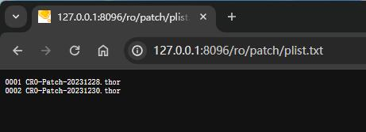
0x60 效果演示
至此登陆器的基本配置全部完成，看一下效果：
备用视频源：youtube
0x70 补丁校验码（可选）
在前面配置 web 服务的时候，在 main.ini 中有两项关于校验码的配置当时留空的：
[Patch]
ClientSum=
PatcherSum=这两个值的作用其实是确保启动器 _CasualRO.exe 和补丁 CRO-Patch-20231230.thor 是最新的。
它的生成方式也很简单，需要利用 Thor Patcher 的 Tools 目录下 CheckSum.exe 工具，把这两个文件分别拖拽进去即可生成校验码：
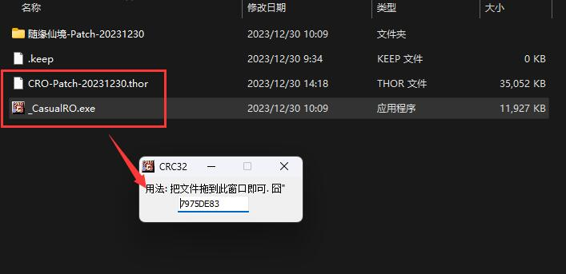
- ClientSum： 填写启动器
_CasualRO.exe的校验码 - PatcherSum： 填写补丁
CRO-Patch-20231230.thor的校验码
每次发版需要按需修改，但是 实测下来，不配置、配置正确的值、配置错误的值，都没有任何区别，省得麻烦还是不配的好。
应该是 Thor Patcher 这个版本的 BUG，理论上校验不通过，START GAME 按钮应该是禁用状态的
0x80 皮肤更换（可选）
Thor Patcher 登陆器默认的皮肤实在太太太太太丑了。
更换皮肤的方式其实很简单，其实前面的教程有跟着做的话，应该知道哪些文件应该放在服务端、哪些文件应该放在客户端。
更换皮肤也涉及到这两部分文件的替换。
Thor Patcher 送了一款默认皮肤 Additional Skins，我们以它为示例说明：
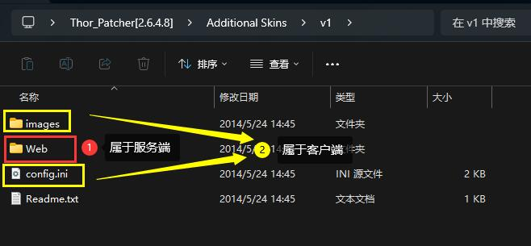
从 Additional Skins 目录下不难看出：
- Web 目录： 属于 web 服务端的内容
- images 目录和 config.ini： 都是 Configuration 内的内容，属于客户端
因此只需要把对应位置的文件替换即可更换皮肤：
- 把 Web 目录下所有文件覆盖到
/var/www/html/ro/patch中 - 把 images 目录和 config.ini 覆盖到 RO 客户端的根目录下，同时记得参考上文的方法重新配置
config.ini的关键配置项
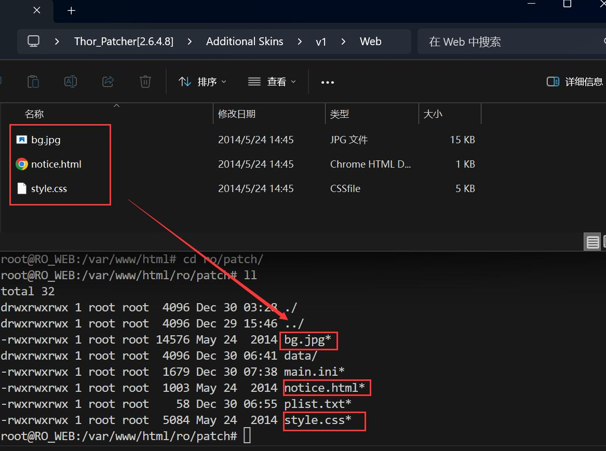
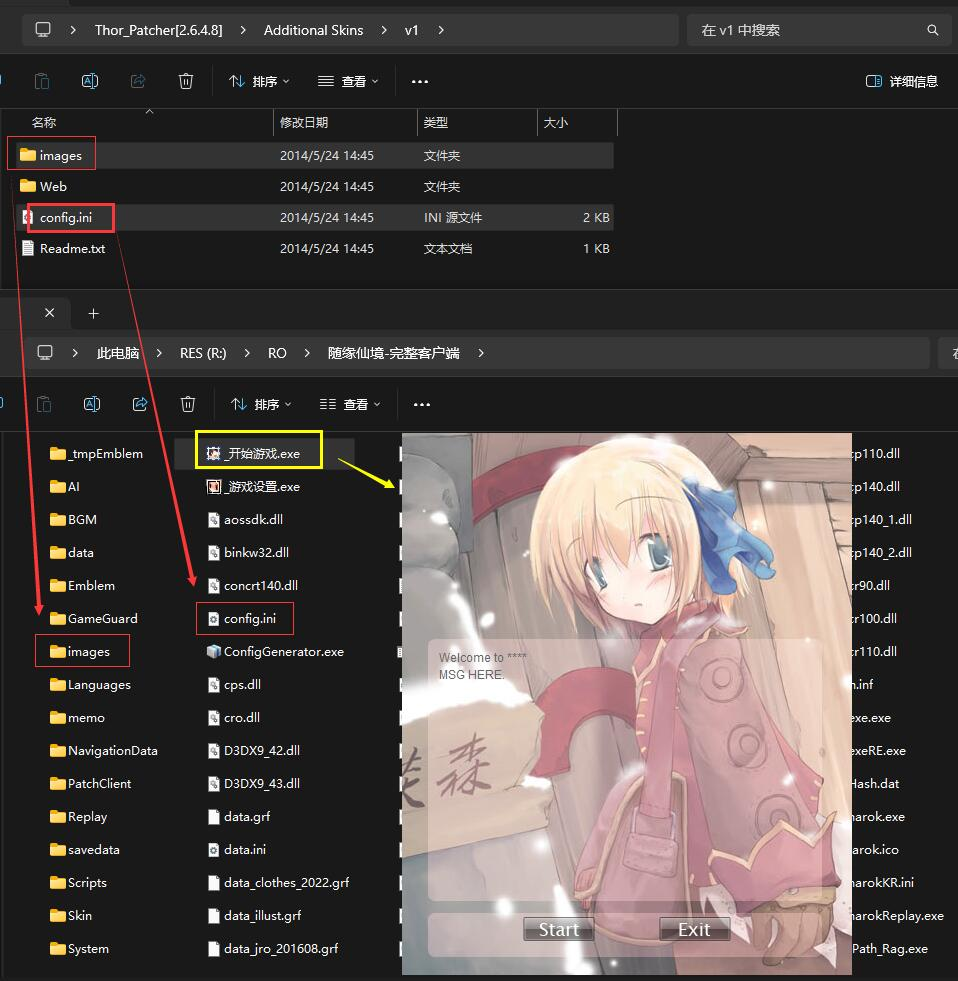
在 rAthena 有不少免费皮肤的资源，这些资源的格式就规整多了，大部分都是按照 Thor Patcher 目录进行编排，一眼就能识别哪些文件应该替换到哪里：
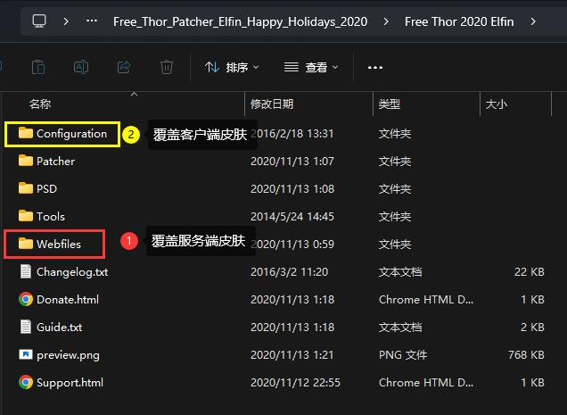
但是像 Free Thor 2020 Elfin 这种皮肤，是需要在 web 服务端开发对应的子页面才会有内容效果的：
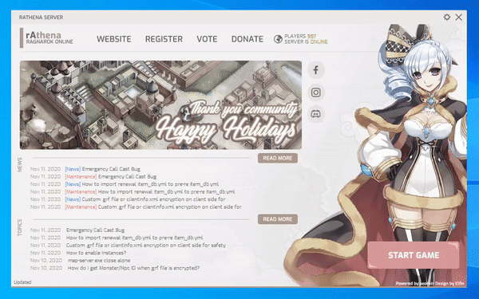
如果你没有那么多精力，不妨试试这个极简皮肤 Simple RO patcher，没有 web 页面的开发，纯粹提供自动更新补丁的能力也挺不错的：